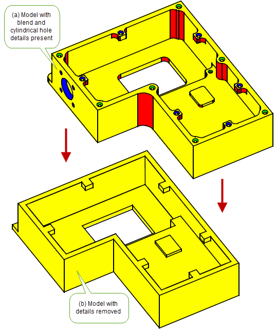

| |
Enquiring Model Data and Identifying Details |
| <<< Storing Data | Chapters | Displaying Data >>> |
Parasolid provides a vast array of functionality to let you enquire about the status of any entity. This functionality includes the ability to:
You can find out about (and modify) the connections that exist between entities, such as the geometry that is attached to a piece of topology.
These functions access the Parasolid model data structure directly and are therefore very fast. You can use them to develop automatic feature recognition and decomposition applications.
Parasolid provides functionality to enquire about the topological information in a model, such as the properties of a loop, or whether a region is solid or void. In addition, a wide range of functionality is available to enquire about model geometry: for example, you can retrieve parameterisation information for a curve or surface, coincidence information for two pieces of geometry that are coincident, or sample points on a curve.
As well as getting information directly from a model, Parasolid provides sophisticated functionality to let you analyse any given model.
Parasolid includes support for identifying model details, namely:
Face-sets identified by any of these methods might subsequently be deleted from the model, or used as input to other face-based functionality; Figure 13-1 shows an example of identifying and deleting blends and holes from a body.
You can find distinct sets of faces in a body that are separated by a given set of edges.
You can identify distinct sets of faces in a body that represent a specific detail, such as faces that comprise a cylindrical hole. Parasolid returns face sets corresponding to individual details, which you might then decide to delete from the model.
Parasolid allows you to identify blend faces that are within (or connected to) a set of input faces. These must be constant-radius rolling-ball blends. However, these need not necessarily be defined as constant-radius rolling-ball blend faces, so long as the actual blended face is of near constant radius (to within a specified tolerance). Once identified, blends can also be deleted, and the body repaired using dedicated blend deletion functionality.
Figure 13-1 Identifying and deleting blends and holes from a body
| <<< Storing Data | Chapters | Displaying Data >>> |